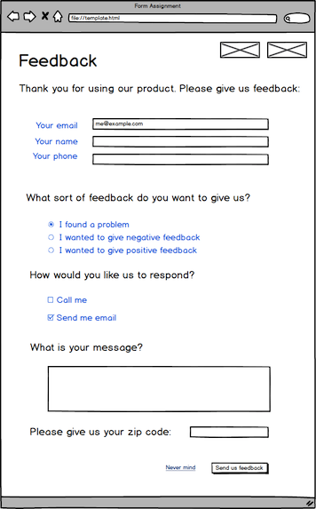
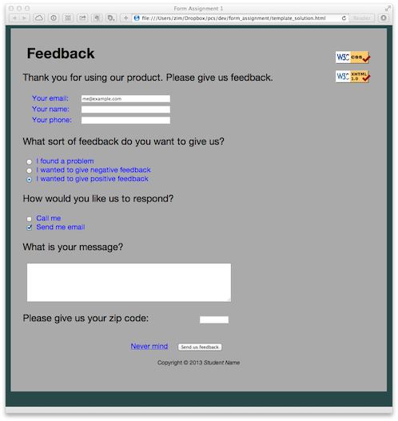
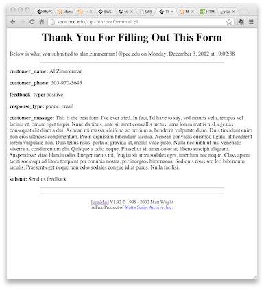

Instructions
You will create a web-based feedback form. This feedback form will gather information from the customer using a simple form and submit it to an online Common Gateway Interface (CGI) script.
References
Refer to w3schools.com for information about forms and tags. The template is in XHTML. Your solution can be in either XHTML or HTML5, but make sure you create a valid DOCTYPE and head elements if you change it to HTML5.
Page Design
The wireframe mockup for your form appears at right. Click on the image for a larger version.
{kind=link}
The client wants the form page to have this layout, so try to match it as closely as possible. You will be given a well-commented template for the page. You need to add the form to the template.
Note that the title is 36 point font, the prompt text is 24 pt, and everything else is 16pt. The font for the field labels should be dark blue. All other fonts should be black. The font family is not specified. You may apply any other styling as you see fit, as long as the form remains usable.
Main text fields
The main text fields of the form are the e-mail, name, and phone number of the customer. The email and name fields should be large enough to enter a long string, but the phone field can be smaller. The e-mail field should have a default value in the text box that indicates the legal addresses that are permitted.
Radio buttons
The radio buttons allow the customer to select the type of feedback they want to give us. The radio buttons should submit a single attribute whose name is feedback_type and whose value is one of the following three values: "problem", "negative", or "positive".
Checkboxes
The checkboxes allow the customer to specify the type of response they want us to give them. Each checkbox should have a unique attribute with its own name and value.
Text area field
The text area field for the message should be at least forty characters wide and at least seven lines tall. You can make it whatever size looks good to you and makes the form easy to use above those minimum sizes. It should scroll if the customer enters a lot of text.
Submit button
The submit button should have the text “Send us feedback” regardless of the name of the button in your code.
Notice that the bottom of the form has a cancel link. This link should go back to your journal.
Using Form Echo script
This assignment requires you to use a specific "CGI" script. This is a simple ruby sinatra script running at http://form-echo.herokuapp.com You need to point your form to the params hash processor by using the following action:
action="http:form-echo.herokuapp.com/form-echo">
Example
Here's one possible solution created from the template. Note the badges, the fields, the styling, the scrolling text area, and the button at the bottom of the form.

And this is the result when the form is submitted. The script echoes your form's data.

Specific instructions
- Fork the portland code school "form-assignment" repo
- Duplicate the template.html file to your own copy
- Put your name in the placeholder places
- Insert the three main fields for e-mail, name, and phone number. You may want to use a simple, three-row and two-column table to align the field labels and the fields.
- Create the radio buttons that determine the value for the feedback type.
- Create the check boxes that indicate the response types the customer wants.
- Create the text area field for the feedback message.
- Create the zipcode field
- Create the "Never mind" link and send it somewhere fun, like www.google.com.
- Create the submit button, make sure it has the correct text displayed, and make sure it floats to the right corner of the form.
- Verify that your form is working correctly with the CGI script by observing the data displayed by the CGI script.